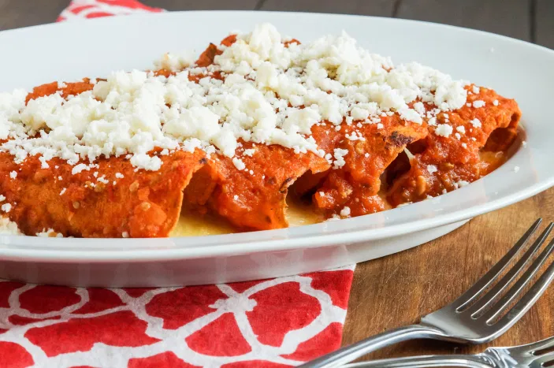

Authentic Mexican Enchiladas
Today's dish of choice is spicy red enchiladas!
I've had many different kinds of enchiladas in this world, but the ones I've always found the most delicious
were right at home, cooked by ma.
Beef or cheese, it's delicious either way because the real secret is in the sauce, and with my ma's sauce, you
can never go wrong.
I hope you enjoy this recipe to your heart's content as I do every month!
- 4 dried guajillo peppers, stemmed
- 4 dried ancho pepper, stemmed
- 3 dried arbol peppers, stemmed
- 1 tomatillo, husk removed
- 2 roma tomatoes, cut in half
- 1 white onion, cut in quarters
- 5 garlic cloves chopped
- 1 bunch cilantro, chopped, stems removed
- 20 corn tortillas
- 1 pound ground beef (or mozzarella cheese filling)
- 1 block queso fresco (crumbling cheese)
- salt as needed (~2 tsp)
- pepper as needed (~1 tsp)
- oil as needed (~1 cup)
- Roast dried peppers on cast iron skillet for a few minutes until fragrant, don't scorch or you'll
have a
bitter sauce
- Cut open peppers and deseed, gloves are best practice. Then place in a bowl and cover with boiling
water
for 20-30 minutes until soft
- Roast tomatoes, tomatillos, 4 cloves of garlic and 3/4 of the onion until browned, then add water to
cover halfway and raise to a boil for 2 minutes. Stir to evenly blanch each side of the vegetables
- Transfer pepper and vegetable mixtures into a blender, add cilantro and a tsp of salt, then grind
until
smooth
- In a large saucepan, add oil to lightly cover the bottom, heat to medium-low, and pour the blender
mixture inside. cook for 30 minutes
- Preheat oven to 350F
- In a large pan, brown the ground beef with the remaining onion and garlic, season with salt and
pepper
- Put ground beef off to the side, get one more pan, and put about 1/2 to 1 cup of oil to flash fry
tortillas in at medium-high
- Once the sauce is done and the oil is hot enough (check with a drop of water, if it pops it's
ready),
place a baking tray to the side of the sauce, where you'll immediately transfer the tortillas after
flash frying them and covering with sauce. Get a pair of tongs, grab a tortilla, flash fry in the
oil
for 5-10 seconds on each side, then drag both sides of the tortilla across the sauce until covered.
Transfer to the baking tray where you'll stuff the tortilla with ground beef and tightly roll.
Repeat
for every tortilla until the tray is filled
- Bake the enchiladas in the oven for 20 minutes
- Remove from the oven, let sit for 10 minutes, then serve with queso fresco sprinkled on top